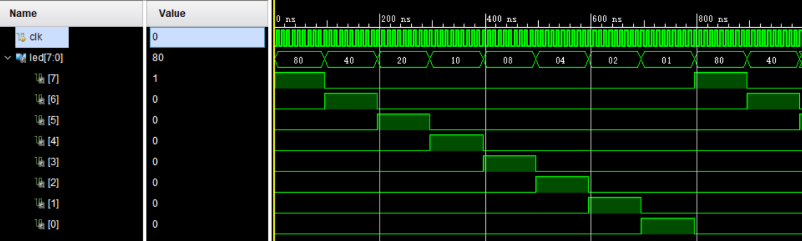
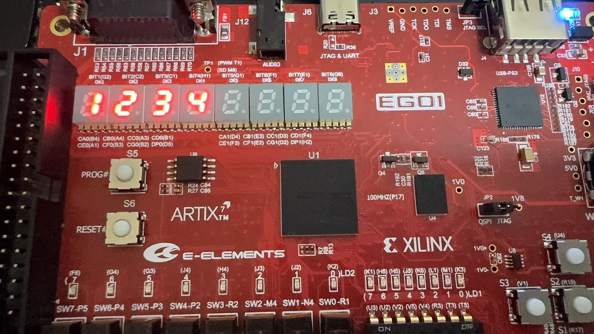
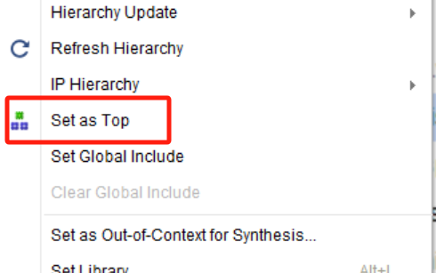

Digital Logic: Chasing LEDs and Multiplexed Seven-Segment Displays
Objectives
- Learn to implement a chasing-LED effect with a shift register.
- Understand the principle of multiplexed scanning for multi-digit seven-segment displays.
- Implement an eight-LED chasing pattern and a four-digit display on the EGO1 development board.
1. Demo 1: Eight-LED Chasing Pattern
1.1 Design Objective
Implement a chasing pattern on eight EGO1 LEDs (LED0–LED7):
- Exactly one LED is on at any time.
- The illuminated position moves once per second.
- It moves from left (LED7) to right (LED0).
- After reaching the rightmost position, it returns to the leftmost position and repeats.
1.2 Design Approach
The chasing-LED circuit consists of a clock divider plus a circular shift:
- Use the counter to divide the 100 MHz clock down to 1 Hz.
- Whenever the counter reaches one second, circularly shift the LED pattern one position to the right.
A circular right shift can be implemented with the Verilog concatenation operator:
led <= {led[0], led[7:1]}; // 循环右移
What does this statement do?
led[7:1]: Select the upper seven bits.led[0]: Select the least-significant bit.{led[0], led[7:1]}: Concatenate the least-significant bit in front of the upper seven bits, shifting the entire pattern one position to the right.
Starting from led = 8'b1000_0000, where only LED7 is on, the pattern is:
8'b1000_0000 → 8'b0100_0000 → 8'b0010_0000 → ... → 8'b0000_0001 → 8'b1000_0000
LED7亮 LED6亮 LED5亮 LED0亮 回到LED7
1.3 Initialization
On a Xilinx FPGA, registers are automatically initialized at power-up to the initial values specified in the source code. We can therefore use an initial statement to set the initial state without a reset signal:
reg [31:0] cnt = 0; // 计数器初始为 0
initial led = 8'b1000_0000; // LED 初始状态：最左边亮
Note: Xilinx FPGA synthesis supports
initialstatements, but not all FPGA vendors do. This course uses the EGO1 development board with a Xilinx Artix-7 FPGA, so this construct is supported.
1.4 Parameterized Division Factor
Here, a parameter specifies the division factor so that it is easy to switch between simulation and on-board operation:
module running_led #(
parameter MAX_COUNT = 100_000_000 // 默认：100MHz / 1亿 = 1Hz
)(
input clk,
output reg [7:0] led
);
Pass a smaller value during simulation to accelerate it:
running_led #(.MAX_COUNT(10)) uut ( ... ); // 仿真用，10 个周期移一位
Use the default value of 100 million on the board; the design source does not need to be modified.
1.5 Complete Design
module running_led #(
parameter MAX_COUNT = 100_000_000
)(
input clk,
output reg [7:0] led
);
reg [31:0] cnt = 0;
initial led = 8'b1000_0000;
always @(posedge clk) begin
if (cnt == MAX_COUNT - 1) begin
cnt <= 0;
led <= {led[0], led[7:1]};
end else begin
cnt <= cnt + 1;
end
end
endmodule
Key points:
- Counter
cntcounts from 0 throughMAX_COUNT - 1. At the terminal count, it returns to zero and shifts the LED pattern.- Counting and shifting occur in the same
alwaysblock, keeping the logic clear.
1.6 Testbench
`timescale 1ns/1ps
module tb_running_led();
reg clk;
wire [7:0] led;
running_led #(.MAX_COUNT(10)) uut (
.clk(clk),
.led(led)
);
initial clk = 0;
always #5 clk = ~clk; // 100MHz
initial begin
#2000;
$finish;
end
endmodule
In the simulation waveform, led should shift right once every ten clock cycles (100 ns), progressing from 8'b1000_0000 to 8'b0100_0000, 8'b0010_0000, and so on.
The simulation waveform is shown below:

1.7 Pin Constraints
## 系统时钟
set_property PACKAGE_PIN P17 [get_ports clk]
set_property IOSTANDARD LVCMOS33 [get_ports clk]
## LED[7:0]（LED7在最左，LED0在最右）
set_property PACKAGE_PIN K2 [get_ports {led[7]}]
set_property IOSTANDARD LVCMOS33 [get_ports {led[7]}]
set_property PACKAGE_PIN J2 [get_ports {led[6]}]
set_property IOSTANDARD LVCMOS33 [get_ports {led[6]}]
set_property PACKAGE_PIN J3 [get_ports {led[5]}]
set_property IOSTANDARD LVCMOS33 [get_ports {led[5]}]
set_property PACKAGE_PIN H4 [get_ports {led[4]}]
set_property IOSTANDARD LVCMOS33 [get_ports {led[4]}]
set_property PACKAGE_PIN J4 [get_ports {led[3]}]
set_property IOSTANDARD LVCMOS33 [get_ports {led[3]}]
set_property PACKAGE_PIN G3 [get_ports {led[2]}]
set_property IOSTANDARD LVCMOS33 [get_ports {led[2]}]
set_property PACKAGE_PIN G4 [get_ports {led[1]}]
set_property IOSTANDARD LVCMOS33 [get_ports {led[1]}]
set_property PACKAGE_PIN F6 [get_ports {led[0]}]
set_property IOSTANDARD LVCMOS33 [get_ports {led[0]}]
1.8 On-Board Verification
- Create a project in Vivado and add
running_led.vand the constraint file. - Run synthesis → implementation → bitstream generation → programming.
- Verify that the eight LEDs illuminate in sequence from left to right, moving one position per second.
2. Multiplexed Seven-Segment Display Principles
2.1 Why Is Multiplexed Scanning Necessary?
Recall that each of the EGO1's left and right groups shares one set of segment-select signals. At any instant, all digits in a group can therefore show only the same glyph.
How can they display different content? The answer is multiplexed scanning, or time-division multiplexing.
2.2 Multiplexed Scanning
- Illuminate only one digit for a very short interval and display its corresponding value.
- Switch to the next digit.
- Alternate rapidly among the four digits.
- If switching is sufficiently fast (>200 Hz per digit), persistence of vision makes the digits appear to be illuminated simultaneously.
Timing diagram:
时间 →
BIT1: ████ ████ ████
BIT2: ████ ████ ████
BIT3: ████ ████ ████
BIT4: ████ ████
段码: D0 D1 D2 D3 D0 D1 D2 D3 ...
2.3 Implementation Architecture
The following diagram shows a general architecture. Clock division and counting produce a slow display clock (DISP_CLK) and digit-select decoding signals B1B0. These determine which digit is illuminated at a given time and which pattern it displays.

2.4 Clock Divider
The following parameter values may be used as references:
parameter PERIOD = 200_000; // 500Hz，显示稳定
// parameter PERIOD = 250_000; // 400Hz，显示稳定
// parameter PERIOD = 5_000_000; // 20Hz，能明显看到一位一位轮流亮
// parameter PERIOD = 2_500_000; // 40Hz，会有明显闪烁
// parameter PERIOD = 1_000_000; // 100Hz，轻微闪烁
reg [31:0] div_cnt;
reg scan_clk;
always @(posedge clk or negedge rst_n) begin
if (!rst_n) begin
div_cnt <= 32'd0;
scan_clk <= 1'b0;
end else if (div_cnt == (PERIOD >> 1) - 1) begin
div_cnt <= 32'd0;
scan_clk <= ~scan_clk;
end else begin
div_cnt <= div_cnt + 1'd1;
end
end
Key points:
PERIODis the number of system-clock cycles in one period ofscan_clk.- When the counter reaches half of a period,
scan_clktoggles.- This produces a stable, low-frequency scan clock.
2.5 Scan Counter
reg [1:0] scan_cnt;
always @(posedge scan_clk or negedge rst_n) begin
if (!rst_n)
scan_cnt <= 2'd0;
else if (scan_cnt == 2'd3)
scan_cnt <= 2'd0;
else
scan_cnt <= scan_cnt + 1'd1;
end
The counter values have a direct interpretation:
0: Scan Digit 1.1: Scan Digit 2.2: Scan Digit 3.3: Scan Digit 4.
2.6 Digit-Select Signals
Use one-hot encoding so that only one digit is selected at any time. The following order is only an example:
scan_cnt |
Selected digit |
|---|---|
| 2'd0 | BIT1 (leftmost) |
| 2'd1 | BIT2 |
| 2'd2 | BIT3 |
| 2'd3 | BIT4 (rightmost) |

2.7 Segment-Select Signals
The EGO1 uses common-cathode displays, so a high level illuminates a segment. The segment-code format is seg = {a, b, c, d, e, f, g, dp}:

3. Demo 2: Displaying 1234 on Four Digits
3.1 Design Objective
Display 1234 on either the left or right group of four seven-segment digits on the EGO1.
3.2 Code Framework
Complete the sections marked ______ in the following code:
module dynamic_display #(
parameter PERIOD = 200_000 // 500Hz，显示稳定
)(
input clk, // 系统时钟 100MHz
input rst_n, // 低电平有效
input [3:0] digit0,
input [3:0] digit1,
input [3:0] digit2,
input [3:0] digit3,
output reg [7:0] seg, // 段选输出 {a,b,c,d,e,f,g,dp}
output reg [3:0] an // 片选输出 BIT1~BIT4 或者 BIT5~BIT8
);
reg [31:0] div_cnt;
reg scan_clk;
reg [1:0] scan_cnt;
// -------- 分频器 --------
always @(posedge clk or negedge rst_n) begin
if (!rst_n) begin
div_cnt <= 32'd0;
scan_clk <= 1'b0;
end else if (div_cnt == _____________) begin
div_cnt <= 32'd0;
scan_clk <= _____________;
end else begin
div_cnt <= _____________;
end
end
// -------- 扫描计数器 --------
always @(posedge scan_clk or negedge rst_n) begin
if (!rst_n)
scan_cnt <= 2'd0;
else if (_____________)
scan_cnt <= 2'd0;
else
scan_cnt <= _____________;
end
// -------- 数据选择 + 片选 --------
reg [3:0] bcd_data;
always @(*) begin
case (scan_cnt)
2'd0: begin bcd_data = digit0; an = _____________; end
2'd1: begin bcd_data = digit1; an = _____________; end
2'd2: begin bcd_data = digit2; an = _____________; end
2'd3: begin bcd_data = digit3; an = _____________; end
default: begin bcd_data = 4'd0; an = _____________; end
endcase
end
// -------- 七段译码 --------
always @(*) begin
case (bcd_data)
4'd0: seg[7:0] = _____________;
4'd1: seg[7:0] = _____________;
4'd2: seg[7:0] = _____________;
4'd3: seg[7:0] = _____________;
4'd4: seg[7:0] = _____________;
4'd5: seg[7:0] = _____________;
..._____________
default: seg[7:0] = 7'b00000000;
endcase
end
endmodule
4. Laboratory Exercise
Complete the fill-in-the-blank code in Demo 2. Add the following module at the beginning of the source file (creating a new file is recommended), set display as the top-level module, add an XDC file, and assign the pins. Display 1234 on four EGO1 seven-segment digits.
module display (
input clk,
input rst_n,
output [7:0] seg, //段选信号
output [3:0] an //片选信号
);
dynamic_display u_disp (
.clk(clk), .rst_n(rst_n),
.digit0(4'd1), .digit1(4'd2),
.digit2(4'd3), .digit3(4'd4),
.seg(seg), .an(an)
);
endmodule

Appendix: Frequently Asked Questions
-
Q: Why does the display flicker, or why are some digits off? A: Check that the digit-select signal
anuses one-hot encoding, with only one active bit at a time, and thatscan_cntcovers all four digits. -
Q: Why does the display show incorrect glyphs? A: Check that the bit order of
seg,{a,b,c,d,e,f,g,dp}, matches the relationship betweenseg[7]~seg[0]and the pin constraints. Verify each bit against the glyph diagram in Section 2.7. -
Q: Why is only one digit illuminated? A: Check that
scan_cntis counting correctly in the simulation waveform and that the digit-select pins are constrained correctly.